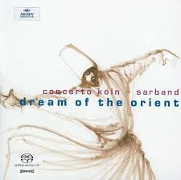

SACD
Dream Of The Orient
Concerto Köln · Sarband
Format SACD
Media: — · Sleeve: —
—
Personal
Discogs SuggestedCA$28.44
Discogs MedianCA$28.44
Discogs HighCA$28.44
- Physical Copy ID
- BB-SACD-049
- Year
- 2004
- Label
- Archiv Produktion
- Catalog #
- 474 992-2
- Country
- Europe
- Genre / Style
- Classical, Folk, World, & Country · Classical